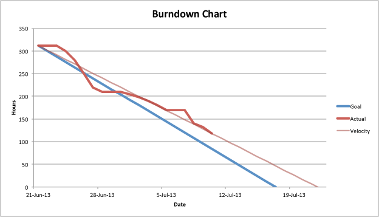

ebollens [GitHub] / ebollens [LinkedIn] / @ericbollens [Twitter]
Plan
Implement
Test
Demo
Release
Smooth if everything fits perfectly into place...
But how often does that actually happen?
Waterfall seeks to minimize iterations
but iterations can have benefits
With many quick iterations, we quickly know...
if we're doing the wrong thing
if we're out of sync with our timeline
SCRUM is a methodology for defining this cycle
Vision of the project
Interested in return-on-investment
Defines priorities and acceptance criteria
Responsible for bringing a feature to completion
Owns features and estimates
Facilitator of the team
Ensures project is progressing smoothly
Makes sure team is equipped to get the job done
As a (role)
I want (feature)
so that (benefit)
Defined by product owner
along with priority and acceptance criteria
Product backlog is the sum of all user stories
Release backlog is a subset of user stories based on priority
A set user stories from the current release backlog
Each sprint should reach a "ship-ready" state
Estimates by story points or time
Smaller stories are easier to work with
so consider breaking big ones down
Product owner defines priority
while team defines size
Expected sprint duration istime/velocity
Typically ranges from one to four weeks
The shorter the release cycle, the shorter the sprint
Aim for between two and twelve sprints per release
The work is chunked up, but...
How do we know if we're on track for the sprint?
Are we on target for our release?
A burndown chart provides
day-by-day measure of the work remaining

Burndown velocity is the slope of the graph
Objective measure of expectations versus reality
Projections aren't always right
This isn't always "bad"
but it's something important to know!
Allows the team to make adjustments
Add more resources to the team?
Adjust sprint and release completion times?
Revisit the scope of the project?
What will we do?
Product owner presents stories ideally in the sprint
Team decides what they can commit to for the sprint
How will we do it?
Team breaks up stories into tasks
Product owner is available for questions
"Weather report"
Each team member covers:
Work completed since last meeting
Work to be done before next meeting
Any obstacles encountered
Ensures the team is in sync
Timeboxed and notes are taken
Run by the SCRUM Master, but for the Team
When a sprint comes to completion, team reflects on...
What went right?
Where can we improve?
Scrum is an agile method that needs
constant tweaking and improvement
http://ebollens.github.io/presentations/scrum
ebollens [GitHub] / ebollens [LinkedIn] / @ericbollens [Twitter]